Virtual Memory
CS422/522 Lecture 3
3 September 2014
Last updated: 14 September 2014
Outline
- Recap / Pointers
- Overview of Memory
- Memory Models
- Sharing Memory
- Wrap-Up
Pointers
Basic Pointers:
int *x, y = 5, z = 7;
x = &y; // x points to y
*x = 6; // y now equals 6
x = &z; // x points to the z
z = 3; // y = 6, z = 3, *x = 3
Pointers
Incrementing a pointer:
8534 ph = (struct proghdr*)((uchar*)elf + elf−>phoff);
8535 eph = ph + elf−>phnum;
8536 for(; ph < eph; ph++){
8537 pa = (uchar*)ph−>paddr;
8538 readseg(pa, ph−>filesz, ph−>off);
8539 if(ph−>memsz > ph−>filesz)
8540 stosb(pa + ph−>filesz, 0,
ph−>memsz − ph−>filesz);
8541 }
8545 entry = (void(*)(void))(elf−>entry);
8546 entry();
The Kernel
Lab 1 focuses on bootstrap and some hardware specific codeOS is layers of abstraction
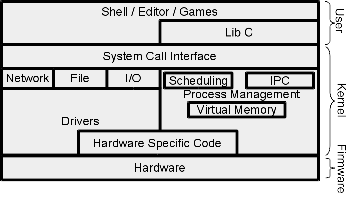
Outline
- Recap / Pointers
- Overview of Memory
- Memory Models
- Sharing Memory
- Wrap-Up
Introduction to Processes
Executing application or program that (believes it) has full domain of an abstracted system.
In this lecture: Use memory to provide a portion of this abstraction --
complete or near complete ownership of address space.
Memory Challenges
- Address bus > processor word size
- Protection / Isolation
- Fragmentation
- Sharing
x86 Memory Layout
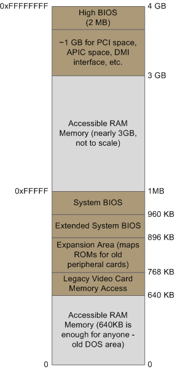Virtual Memory
- Hardware support for independent views of memory
- Stored in physical RAM
- Software only uses virtual memory addresses
- OS maintains -- must be able to translate between the two
Outline
- Recap / Pointers
- Overview of Memory
- Memory Models
- Sharing Memory
- Wrap-Up
x86 Memory Models
- Real mode with segmentation
- Protected mode with segmentation
- Protected mode with paging
x86 Real Mode
- 8086 16-bit with 20-bit address bus
- Stored in segment registers: CS, DS, ES, FS
- Logical address - segment:offset
- Physical address - (segment * 0x10) + offset
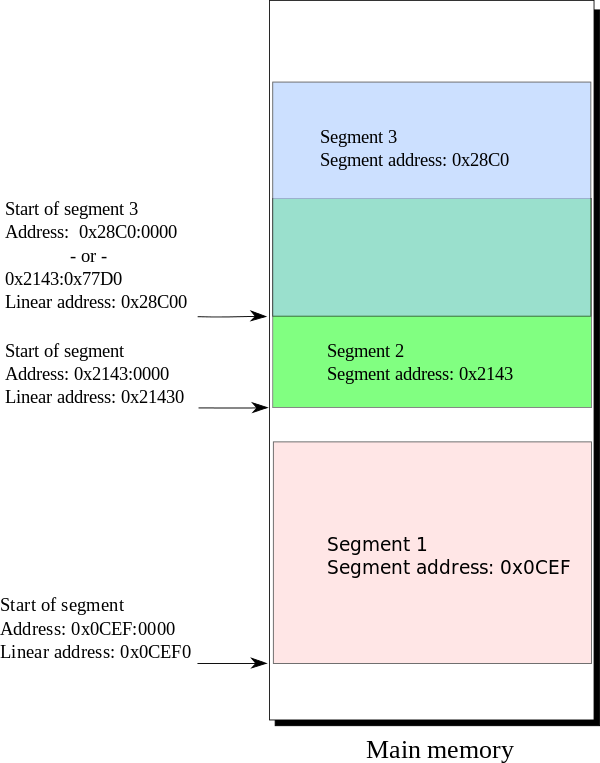
Real Mode Segmentation
All except CS can be changed directly:
mv $0xf000, %ds
pop %ds
Changing the CS register:
jmp $0xf000, $0x10 # CS = $0xf000, EIP = $0xf0010
A 32-bit (64-bit) World
In a 32-bit world, where address bus = word size, what can this form of segmentation do for us?Not too much, moving logical address 0 away from the holes near real address 0.
x86 Protected Mode
- Memory isolation
- Privileged instructions
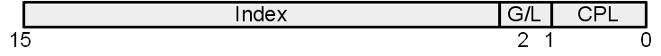 CPL - Current Privielge Level

Protected Segmentation
Segmentation registers become indexes into a table:- Global descriptor table
- Local descriptor table
- Operating system vs Program
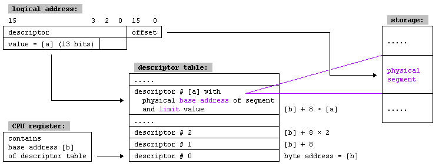
Descriptor Format
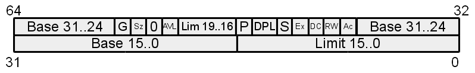- G - 1B / 4KB Blocks
- Sz - 16 / 32 bit segment
- AVL - Available for use
- DPL - Descriptor Privilege Level
- P - Present
- S - System / Code or Data
- Ex - Data / Code
- RW - if Ex - R, if /Ex - W
- Ac - Accessed
Enforcing Protection
- Type checking
- P - Present
- S - System / Code or Data
- Ex - Data / Code
- RW - if Ex - R, if /Ex - W
Enforcing Protection
- Type checking
- Limit checking
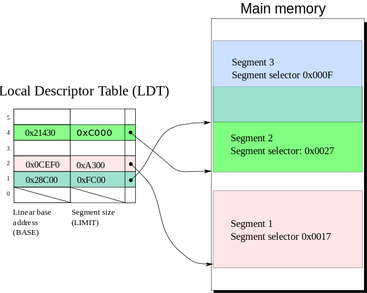
Enforcing Protection
- Type checking
- Limit checking
- Privilege levels
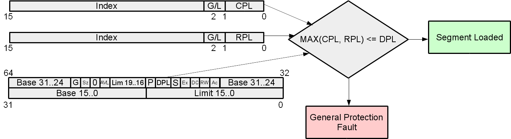
Segmentation is great, right?
- Must be physically backed
- May be fragmented
- Have to deal with memory holes
Paging
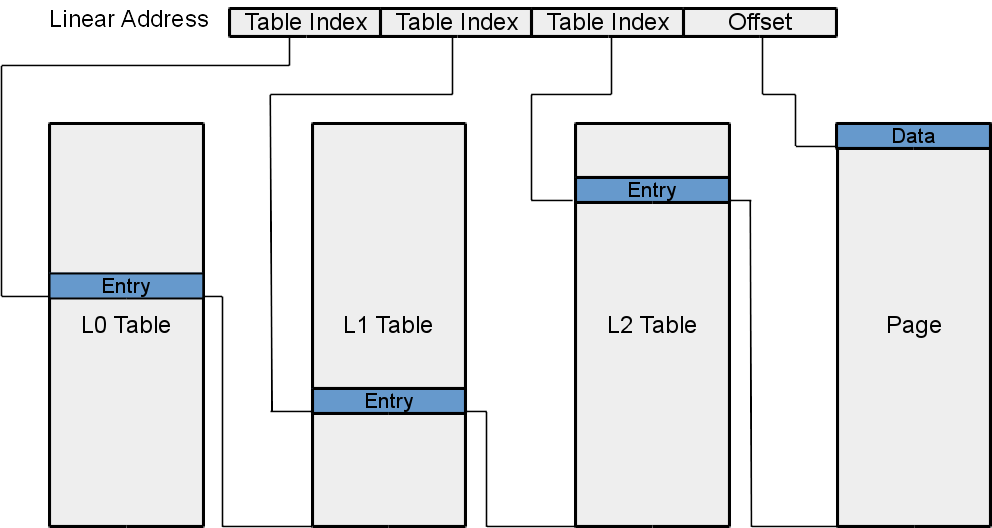x86 Page Tables
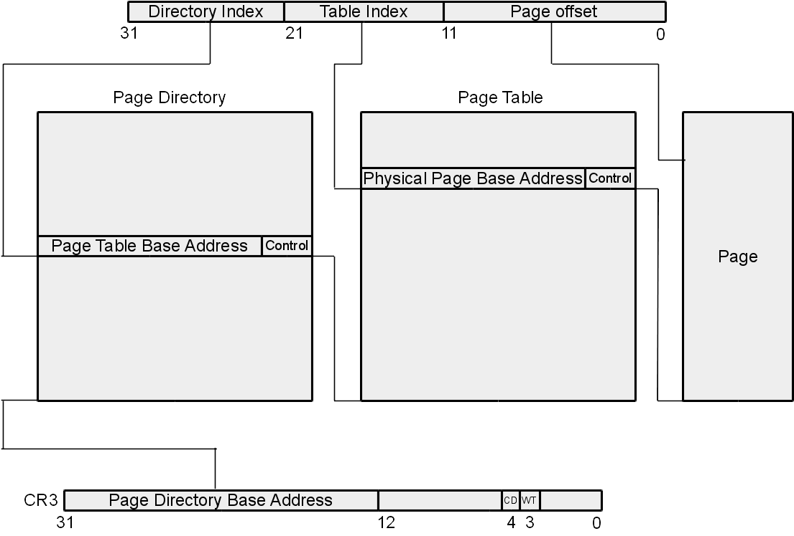x86 Page Table in Depth
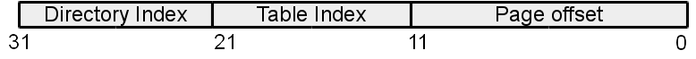
- 10 bits directory offset
- 10 bits table index
- 12 bits page offset
- PTE / PDE 4 bytes
- Directory / Table - 1024 entries
- Page - 4 KB
The Page Directory
- CR3 - base address for directory.
- Why more than one directory? isolation / different views of memory
- What type of control bits?
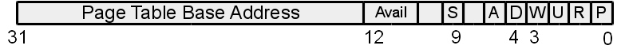
- S - 4KB / 4MB Page tables
- A - Accessed
- D - Disable cache
- W - Enable write-through caching
- U - Supervisor / User Page
- RW - Enable writing
- P - Present
The Page Table
- Format:
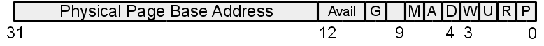
- G - Global
- M - Modified
- PDE is basically a PTE, x86 2 layer page table
The Page
- Stored directly in memory
- Everything is a page -- including page tables
- How to access page tables? Requires a conversion from physical to virtual
4 MB Pages
What changes happen if we use 4 MB pages instead of 4 KB?
- No need to use page tables, merge PDE and PTE
- Performance
Memory Guarding with Page Tables
- Consider a stack grows without bound
- Eventually the stack runs out of space
- Triggers general protection exception -- accessed unallocated memory
- How to address in segmentation? Stack offers special handler, but other memory locations do not
- Paging? Create a valid pte following allocated space, set present bit to 1
Segmentation and/or Paging
- Are paging and segmentation compatible? yes
- Features of segmentation?
- Course grained memory
- 2 bits for privilege
- Cannot guard memory
- Features of page tables?
- (Virtually) continuous memory
- Transparent
- (Nearly) Fixed size pages
- 1 bit for privilege
- Memory guarding
Outline
- Recap / Pointers
- Overview of Memory
- Memory Models
- Sharing Memory
- Wrap-Up
Sharing Memory
- Kernel shares certain data with processes
- Sharing of common code (libraries)
- Interprocess communication
Different ways of sharing?
- Like a pipe
- Different permissions
- Same / different locations in memory
Sharing a Segment
- Libraries: common descriptor - same permissions, same base / limit
- Pipes: different descriptor - set W = 1, same base / limit
- OS data structures: different descriptor: set DPL 3/0, W=0/1, same base / limit
Sharing a Page
- Libraries: common pde, common pte - same permissions, same physical page base address
- Pipe: common pde, different pte - set W = 1, same physical page base address
- OS data structures: (maybe) different pde, different pte - set U,W = (0,1), (1,0), may be mapped to different addresses
The final one cannot be done effectively in segmentation. Why?
Outline
- Recap / Pointers
- Overview of Memory
- Memory Models
- Sharing Memory
- Wrap-Up
Compilation Process
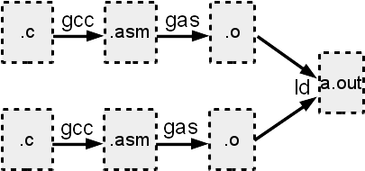Compiler, assembler, linking, loading
Lab 0 and Lab 1
- Lab 0 - Shell, Due: 8/28 @ 11:59 PM
- Lab 1 - Booting a PC, Due: 9/4 @ 11:59 PM
- Waived late penalty until 9/10 @ 11:59 PM Due: 9/4 @ 11:59 PM
Lab 2: Memory Management
- Due: 9/11 @ 11:59 PM
- Disabling segmentation
- Page table management
- Protecting the kernel
Systems Seminar
Tuesdays at 11:45AMAKW307
Pizza
Please contact me if you intend to come
Next Time
Monday 1:00PMUsing Virtual Memory